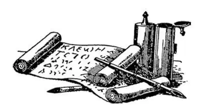

30
A Boy King
少年国王

WHEN you are twenty years old, what do you think you will be doing?
Will you be attending college?
Will you be working, or what?
When Alexander was twenty, he was king of both Macedonia and Greece. But Macedonia and Greece were entirely too small for this wonderful young man. He wanted to rule a much bigger country; in fact, he thought he would like to rule the whole world; that was all—nothing more.
So Alexander went right ahead with his father's plan to conquer Persia. The time had come to pay back Persia for that last invasion one hundred and fifty years before.
He got together an army and crossed the Hellespont into Asia and won battle after battle against the first Persian armies that went out to stop him.
He kept moving on, for Persia was a vast empire.
Soon he came to a town where in a temple there was kept a rope tied into a very farfamed and puzzling knot. It was called the Gordian Knot, and it was very famous because the oracle had said that whoever should undo this knot would conquer Persia. No one had ever been able to untie it.
When Alexander heard the story, he went to the temple and took a look at the knot. He saw at once that it would be impossible to untie it, so, instead of even trying, as others had done, he drew his sword and with one stroke cut the knot in two.
Now when a person settles something difficult, not by fussing with it as one untangles a snarl, but at a single stroke, cutting through all difficulties, we say he “cuts the Gordian Knot.”
From that time on, Alexander conquered one city after another and never lost any battle of importance until he had conquered the whole of Persia.
He then went into Egypt, which belonged to Persia at that time, and conquered that country, too. To celebrate this victory, he founded a town near the mouth of the Nile and named it after himself, Alexandria. He started there a great library that later grew to be so big that there were said to be five hundred thousand books in it—that is, half a million—and was the largest library of ancient times. The books were not like those in the library of Ashurbanipal nor the kind we have now, of course, because printing had not been invented. They were every one of them written by hand, and not on pages, but on long sheets which were rolled up on sticks to form a scroll.
In the harbor of Alexandria was a little island called Pharos, and on this island some years later was built a remarkable lighthouse named for the island, the Pharos. It was really a building more like a modern skyscraper with a tower. It was over thirty stories high, which seemed most remarkable at that time when most buildings were only one or two stories high, and its light could be seen for many miles. The Pharos of Alexandria was called one of the Seven Wonders of the World. You have already heard of three others, so this makes the fourth.

A scroll, pens, and ink （卷轴、笔和墨水）
Alexandria grew, in the course of time, to be the largest and most important seaport of the ancient world. Now, however, the Pharos and the library and all the old buildings have long since disappeared.
Alexander did not stay very long in any one place. He was restless. He wanted to keep on the move. He wanted to see new places and to conquer new people. He almost forgot his own little country of Macedonia and Greece. Instead of being homesick, however, as almost any one would have been, he kept going farther and farther away from home all the time. We should call such a man an adventurer or an explorer, as well as a great general. Alexander kept on conquering and didn't stop conquering until he had reached far-off India.
There in India his army, which had stayed on with him all the way, became homesick and wanted to go back. They had been away from home for more than ten years and were so far off that they were afraid they would never get back.
Alexander was now only thirty years old, but he was called Alexander the Great, for he was ruler of the whole world—at least, most of it that was then known to most Greeks, except Italy, which was still only a collection of little, unimportant towns at that time. When Alexander found there were no more countries left for him to conquer, he was so disappointed that he wept!
At last, when there was nothing more to conquer, he agreed to do what his army begged him and started slowly back toward Greece.
He got as far as Babylon, the city once so large and so magnificent. There he celebrated with a feast, but while feasting and drinking he suddenly died. He never reached Greece.
This was in 323 B.C. when he was but 33 years old. You can remember these figures easily, for they are all 3's except the middle figure in the date, which is one less than 3.
Alexander the Great had conquered the largest country that had ever been under the rule of one man, and yet this was not the only reason we call him the Great .
He was not only a great ruler and a great general, but—this may surprise you—he was also a great teacher. Aristotle had taught him to be that.
Alexander taught the Greek language to the people he conquered so that they could read Greek books. He taught them about Greek sculpture and painting. He taught them the wise sayings of the Greek philosophers, Socrates and Plato and his own teacher, Aristotle. He trained the people in athletics as the Greeks did for their Olympic Games.
Alexander had married a beautiful Persian woman named Roxana, but their only child was still a baby, not born until after his father's death; so when the great king died there was no one to rule after him. He had told his generals before he died that the strongest one of them should be the next ruler; they must fight it out among themselves.
His generals did fight to see who should win, and finally four of them who were victorious decided to divide up this great empire and each have a share.
One of his generals was named Ptolemy I, and he took Egypt as his share and ruled well; but the others did not amount to much, and after a while their shares became unimportant and went to pieces. Like a toy balloon which stretches and stretches as you blow it up, Alexander's empire grew bigger and bigger until— all of a sudden—pop —nothing was left but the pieces.
【中文阅读】
你觉得你到了20岁，你会在干什么？
是在上大学吗？
是在工作吗？还是在干别的什么？
亚历山大20岁的时候，已经是马其顿和希腊的国王了。但是对这个杰出的年轻人来说，马其顿和希腊实在是太小了。他想统治一个更大的国家，甚至他觉得他要统治整个世界，也就是说——地球上所有的地方。
因此，亚历山大马上开始实行他父亲征服波斯的计划，现在到了惩罚波斯、让它为上次一百五十年前的入侵付出代价的时候了。
他集合了一支军队，穿过达达尼尔海峡进入亚洲，与到前线阻止他们进犯的波斯先遣部队展开了战斗，并连连获胜。
很快，他来到一个镇子，那里有座庙，庙里有根绳子，绳子因为打了个奇怪的结而闻名遐迩，这个绳结叫“戈耳迪之节”，它之所以非常有名是因为神谕说过谁能解开它，谁就将征服波斯。一直没有人能解开它。
亚历山大听说了这个故事，就来到这座庙，看了看这个结，一眼就看出这个结根本就不可能解开，于是，与别人不同，他连试都不试，抽出利剑，向下用力一挥，把结斩成了两段。
现在，有人解决某个难题时，不是像解开一团乱麻那样，纠缠于各个细节，而是快刀斩乱麻，干脆利落地一下子就克服了所有困难，我们就说他“斩断了戈耳迪之节”。
从此以后，亚历山大征服了一座又一座城市，从未在任何重要战役中失过手，直至征服了整个波斯。
随后，他进入了埃及，埃及当时是属于波斯的，他也征服了这个国家。为了庆祝这次胜利，他在尼罗河河口附近创建了一个城镇，并以自己的名字命名为亚历山大。他在那里还开设了一座很大的图书馆，后来这座图书馆变得非常庞大，据说那里有五十万册藏书——那就是一百万的一半——它是古代最大的图书馆。当然，这些书和亚述巴尼拔图书馆中的书不同，当然也和我们今天的书不一样，因为当时还没发明印刷术。每本书都是手写的，但不是写在一页一页的纸上，而是写在很长的纸上，这些纸卷在木棍上，形成卷轴。
亚历山大城的港湾里有个叫法罗斯的小岛，几年后岛上建了一座著名的灯塔，后来以小岛的名字命名为“法罗斯岛灯塔”。它真的更像一座现代的带塔楼的摩天大楼。它有三十多层楼那么高，当时看起来非常不同寻常，因为那时大多数建筑只有一两层楼那么高，而且灯塔上的亮光可以在很多英里以外都能看见。亚历山大的法罗斯岛灯塔被称为世界七大奇迹之一。你已经听过其中三个了，因此，这是第四个了。
亚历山大城逐渐发展，最终成了古代世界最大、最重要的海港城市。但是，到了现在，法罗斯岛灯塔、图书馆和所有这些古代建筑早已不复存在了。
亚历山大没有在任何一个地方久留。他闲不下来，总想继续不断前行。他想看到新的地方，想征服新的民族。他几乎忘记了自己的马其顿小国和希腊。然而，和别人不一样，他一点也不思乡，总是不停地前进，离家越来越远。我们应该把这样一个人不仅称为伟大的将领，而且还要称作冒险家或探险家。亚历山大不断地征服了一个又一个地方，直到他来到遥远的印度。
进入印度后，一直跟随他征战的军队，犯起了思乡病，想回家了。他们已经离家十多年了，此刻离家那么远，他们担心再也回不去了。
亚历山大这时只有30岁，但是已被称为“亚历山大大帝”了，因为他是整个世界的主宰——至少，对大多数希腊人来说，他们所知道的世界的大部分都已被他征服了，除了意大利，那时候的意大利只不过是一些微不足道的小城镇罢了。当亚历山大发现再没有什么国家剩下来可以让他征服的时候，他竟然失望得哭泣起来！
最后，当再没有地方可以征服的时候，他终于同意了战士们的请求，开始缓缓地撤回希腊。
他最远到了巴比伦，那个曾经一度无比辉煌而庞大的城市。在那儿，他举行了一次庆祝盛宴，但是就在纵酒狂欢的时候，他突然死去了。他再没有回到希腊。
他死于公元前323年，当时他只有33岁。你能很容易记住这些数字，因为除了日期当中的那个数字是2，全都是3。
亚历山大征服的土地最多，这些领土都归于他一人的统治之下，但这并不是我们称他为“大帝”的唯一原因。
他不仅是个伟大的统治者、伟大的将领，而且——这可能会让你吃惊——还是一个了不起的教师。亚里士多德教育他成为一名教师。亚历山大把希腊语教给了他所征服的人，这样他们就能读希腊的书籍。他教给他们关于希腊的雕刻和绘画方面的技巧，他还把希腊哲学家们所说过的名言警句教给他们，这些哲学家就是苏格拉底、柏拉图，还有他自己的老师亚里士多德。他还对他们进行体育训练，就和希腊人为参加奥林匹克运动会所做的一样。
亚历山大娶了一个美丽的波斯女子，她的名字叫罗克珊娜。但是，他们唯一的孩子还只是一个小小的婴儿，是在亚历山大死后才出生的。因此，这位伟大的国王死后，没有人能继承他的大业。在他死前曾对众多将领说，他们中最强大的人将会成为下一位统治者，而他们之间必须通过打斗决出人选。
他的将领们真的互相决斗，看谁能获胜，最后有四个人获得了胜利，这四个人决定把这个庞大的帝国分为四份，每个人分得一块地盘。
其中一个将领名叫托勒密一世，他得到的地盘是埃及，并且还把埃及治理得很好。但其他三个人就没什么成就，过了一段时期之后，他们的领土都逐渐衰落下去，并且四分五裂了。这就像吹气球一样，你不断地吹气，气球就变得越来越大，亚历山大的帝国也是这样越来越大，直到——突然——“啪”的一声——什么都没了，只剩下了一堆碎片。